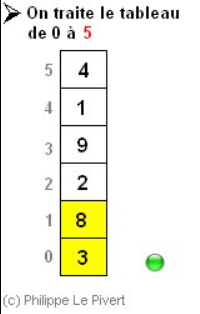
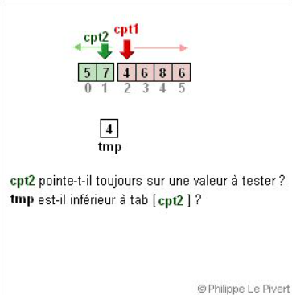
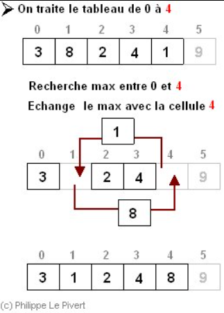
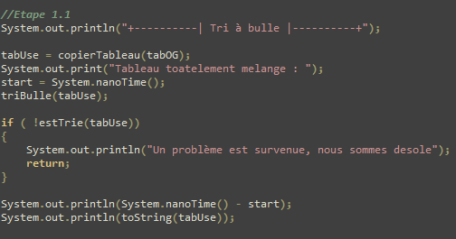
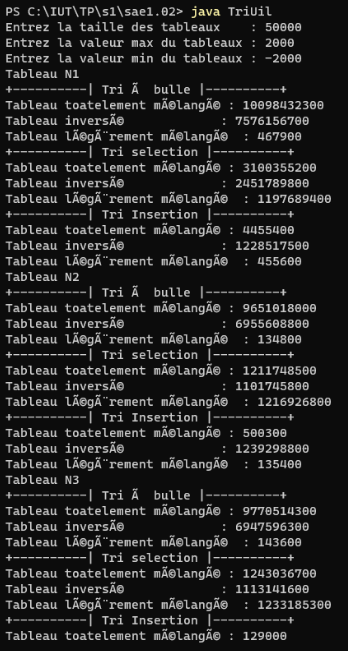
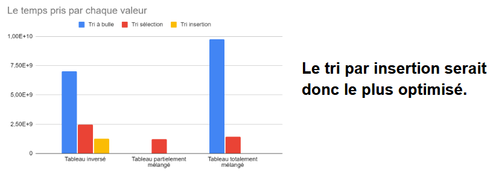

Comparaison algorithmes
Situation
Une SAE basé sur le comparaison d'algorithme qui c'est passé en deux temps : travail en équipe, et évaluation personnelles.
Durant la phase de travail d'équipe, on a commencer par comparer différents type de trie (trie à bulle, trie par séléction,
trie par insertion) sur différent type de tableau.



Différentes situations, mais même départ
Dans cette SAE, il était important de tester les trie dans différentes situations : en effet, un trie peut s'avérer très efficace
dans une situation précis, mais dans un autre cas ce trie sera totalement lent.
L'idée dans cette SAE était donc de tester les différents types de tries dans différentes situation, tout en s'assurant que ces test
se fassent dans la même situation. Ici, la difficultés était donc de s'assurer de ca.
On avait donc un main, composé de différentes méthodes pour s'assurer que les méthodes ont le même environnement.

Traitement des données
Le fichier executé, on a récupérer les données recus pour les visualiser dans un tableur excel.

Puis, avec ca, on a pu comparé l'efficacités des différents tries sur les différents types de tableau.

A la fin, on a rendu un pdf composé des détails de notre raisonnement et de notre approche.
Une envie de voir le code en entier ? Allez sur le GIT SAE 1.02.
Même principe, différent sujet
Nous avons aussi fait une interrogation sur le même sujet, à la différence ici que nous étions seul et nous avons travailler sur
des méthodes de recherches.
Pour plus d'information, aller sur le GIT SAE 1.02